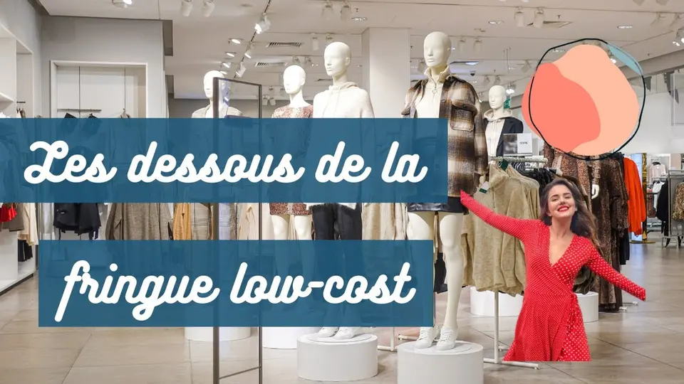
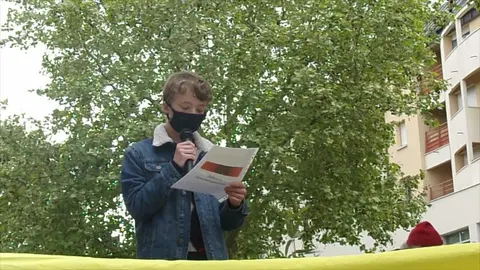

Tout commence par une plante
Le coton pousse dans les champs et demande beaucoup d’eau.
Notre enquête sur la mode pas chère, avec notamment une interview de Louise Aubery, alias MyBetterSelf. D’où viennent nos vêtements, qui les fabrique, et comment faire autrement.

La vidéo de l’enquête, avec Louise Aubery (MyBetterSelf).
ouvrières et ouvriers tués dans l’effondrement du Rana Plaza, le 24 avril 2013, près de Dacca au Bangladesh. L’usine textile de huit étages fournissait des marques de fast-fashion.
2 500 blessés · fiche récap’ Marco Investigationreviennent à l’ouvrier sur un tee-shirt vendu 14,99 €.
Source citée : Public Eyed’eau pour fabriquer un tee-shirt en coton. Pour un jean : 285 douches.
Source à préciserLa fast-fashion, c’est une mode qui se renouvelle très souvent, avec de grandes quantités de pièces produites à bas coût, notamment en Asie et au Maghreb.
Période et source à préciser
Le coton pousse dans les champs et demande beaucoup d’eau.
Le fil est filé puis teint et traité. Ces étapes rejettent des produits toxiques.
Les pièces sont assemblées dans des usines, souvent pour des salaires très bas.
Les vêtements traversent le monde par trafic maritime ou aérien avant d’arriver en boutique.

VidéoLe 9 mai à Rennes, Marco alerte sur les enjeux environnementaux et humains de la fast-fashion.
Chez NowU, pour parler de fast-fashion et des alternatives qui existent.
Peut-on être créatrice de contenus et avoir une démarche éco-responsable ?
Acheter neuf, souvent, pas cher
Les friperies revendent des vêtements d’occasion ; les plateformes comme Vinted aussi.
Ignorer d’où vient le vêtement
L’application Clear Fashion aide à s’informer et à agir pour une mode plus responsable.
Suivre les grandes enseignes
La formation cite par exemple Green Lion, Patine et Mud Jeans.
Ne pas lire l’étiquette
Par exemple le label BCI (Better Cotton Initiative) pour le coton.
Des collections renouvelées très souvent, de grandes quantités, des prix bas : c’est la définition de la fiche récap’.
BCI signifie Better Cotton Initiative : un label qui encadre la culture du coton.
0,49 €, selon Public Eye, source citée dans la formation.
Disponible à l’achat sur Apple Books et Google Play.
Liens d’achat à compléter